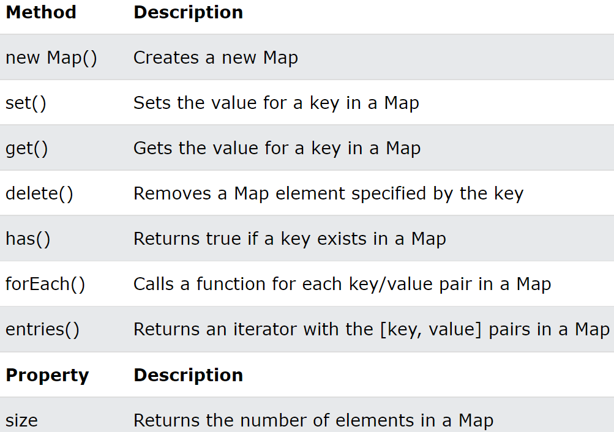

Map : key / value 형태의 데이터를 한 개의 배열로 만들어서 다시 배열에
저장하는 방식
-
선언 및 초기화 : new Map(), new Map([[`key`, `value`], [`key`, `value`], ...])
-
기본적으로 중첩 구조이기 때문에 key의 중복확인이 필수
-
key를 식별자로 사용하는 방식이므로 get("keyName"),
set("KeyName", value) 메서드를 제공
-
자바스크립트 객체를 배열화 시킨 구조라고 생각하면 편함 =>
2차원 배열과 비슷한 형식
-
기본적으로 Map은 타입제한을 하는 것이 원칙이다! =>
key 타입이 달라지면 관리가 어려워지기 때문 =>
자바스크립트 객체도 key는 모두 문자열을 사용하는 것과 같은 원리

Javascript Object VS Map